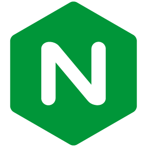
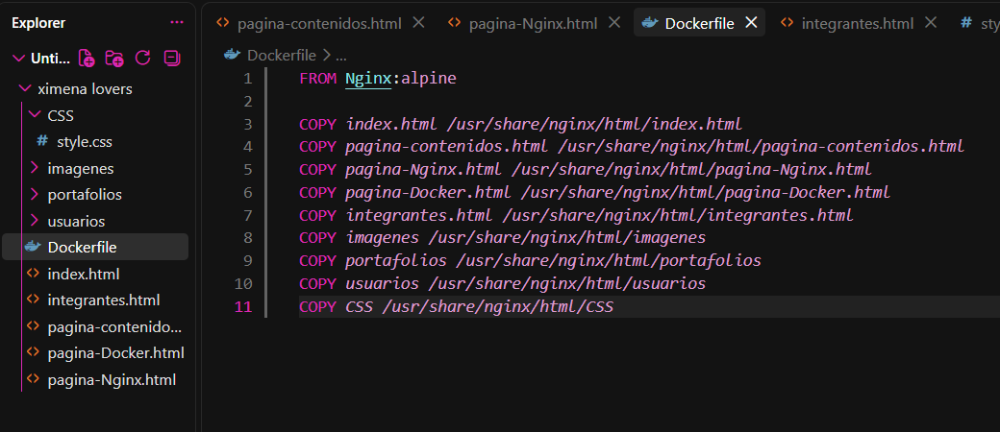
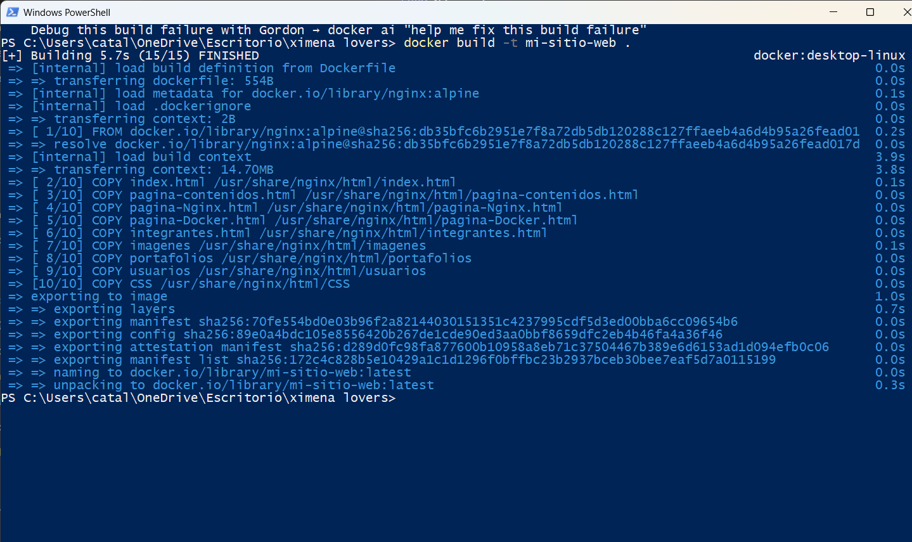
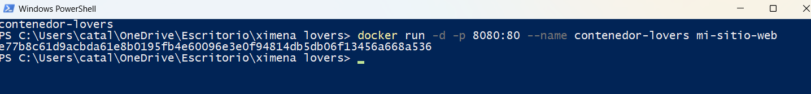
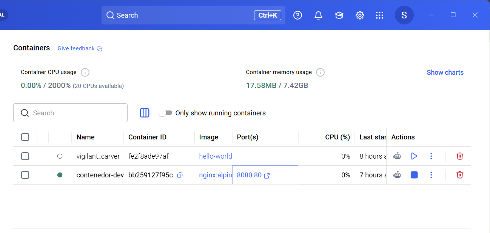
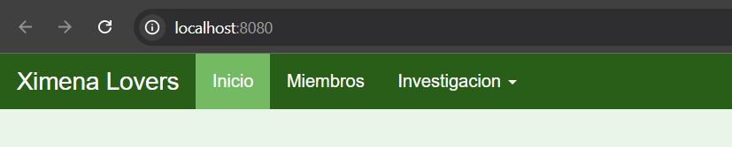
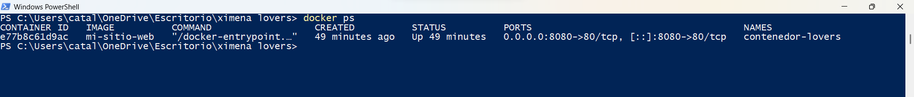

Nginx
¿Qué es Nginx?
Nginx es un servidor web de código abierto que también funciona como proxy inverso, equilibrador de carga y caché HTTP. Es conocido por su alto rendimiento, estabilidad y bajo consumo de recursos, lo que lo hace ideal para manejar grandes volúmenes de tráfico web.

Uso en el Proyecto
En nuestro proyecto, utilizamos Nginx como servidor web para alojar y servir nuestro sitio web. Por lo que es necesario configurarlo adecuadamente en el archivo "Dockerfile" para asegurar su correcto funcionamiento, copiando todo lo que exista en el código para su implementación en el servidor.

-
Permite usar la imagen oficial de Nginx como servidor web:
FROM nginx:alpine -
Para copiar las páginas al directorio que Nginx sirve por defecto:
COPY . /usr/share/nginx/html/
Comando utilizado para construir la imagen

-
docker build: Procesa el código del Dockerfile para empaquetar el servidor y el código.
-
-t (mi-sitio-web): Sirve para asignar un nombre a la imagen construida.
-
. : Le indica a Docker que busque el archivo Dockerfile en el directorio actual.
Comando utilizado para ejecutar el contenedor

-
Ejecución en segundo plano y asignación de nombre:
docker run -d -p 8080:80 --name contenedor-lovers mi-sitio-web
Mapeo de Puertos
El mapeo de puertos permite que las aplicaciones ejecutadas en un contenedor sean accesibles desde el
exterior. El parámetro "-p 8080:80" conecta el puerto 8080 de la máquina anfitriona con
el puerto 80 interno del contenedor. Cuando se abre http://localhost:8080, Docker redirige
la solicitud directamente al servidor Nginx.
Evidencias de Funcionamiento
Sitio funcionando en http://localhost:8080

Evidencia de sitio web funcional

PowerShell con contenedor en ejecución
